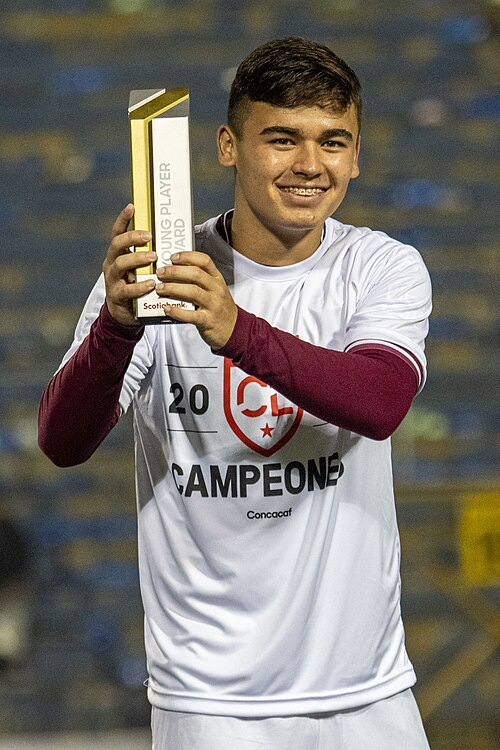

| Nombre | Posición | Edad | Bibliografía | Portada |
|---|---|---|---|---|
| Joseph Mora | Defensa | 31 | Lateral izquierdo del Deportivo Saprissa, con experiencia internacional en la MLS. | |
| Santiago van der Putten | Defensa | 20 | Joven defensor de Liga Deportiva Alajuelense, considerado una promesa de la zaga costarricense. | |
| Patrick Sequeira | Portero | 25 | Arquero del Casa Pia (Portugal), ha ganado experiencia en Europa y es parte del relevo generacional en la portería. | |
| Orlando Galo | Mediocampista | 24 | Mediocampista defensivo del Riga FC (Letonia), reconocido por su recuperación y despliegue físico. | |
| Alejandro Bran | Mediocampista | 23 | Centrocampista de Alajuelense, con visión de juego y gran proyección en la selección nacional. | |
| Kenneth Vargas | Delantero | 22 | Delantero del Heart of Midlothian (Escocia), potente y con gran capacidad de desborde. | |
| Manfred Ugalde | Delantero | 23 | Atacante del Spartak Moscú, figura emergente y uno de los goleadores más prometedores de Costa Rica. |  |
| Álvaro Zamora | Extremo | 22 | Jugador del Académico de Viseu (Portugal), veloz y desequilibrante por las bandas. | |
| Josimar Alcócer | Delantero | 20 | Delantero del KVC Westerlo (Bélgica), destaca por su velocidad y capacidad ofensiva. | |
| Joel Campbell | Delantero | 33 | Delantero experimentado de Alajuelense, figura histórica de la selección costarricense en mundiales. | |
| Quesada | Defensa | 22 | Joven defensor costarricense con participación en ligas locales, proyectado como parte del futuro de la selección. | |
| Keylor Navas | Portero | 38 | Arquero histórico de Costa Rica, actualmente en Newell’s Old Boys, referente mundial y líder indiscutible. |